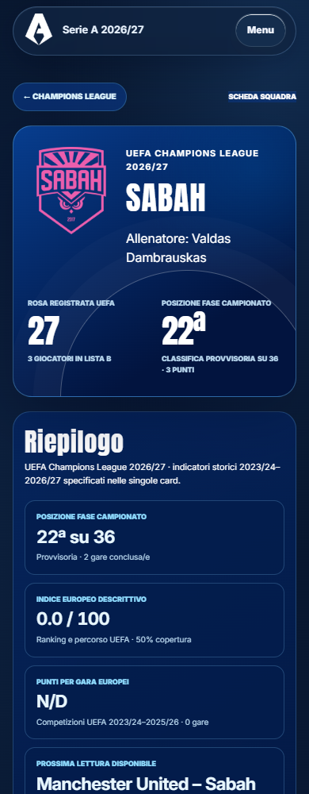
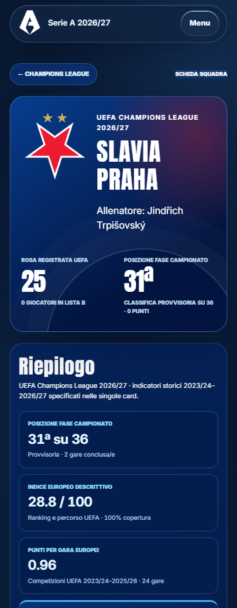
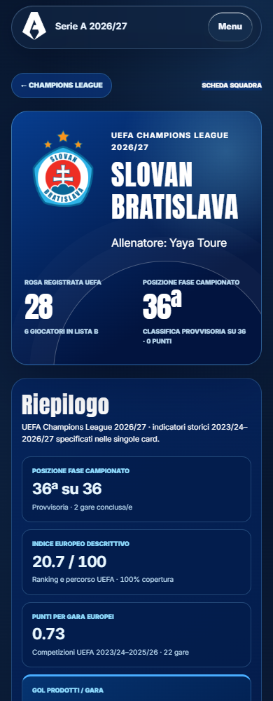
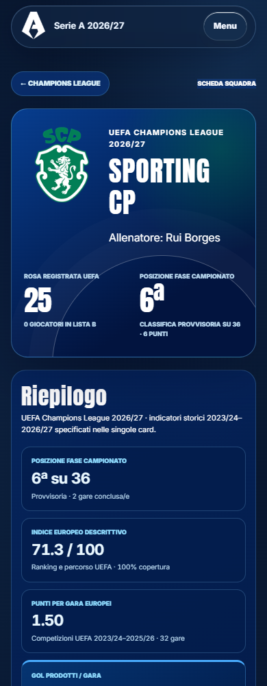
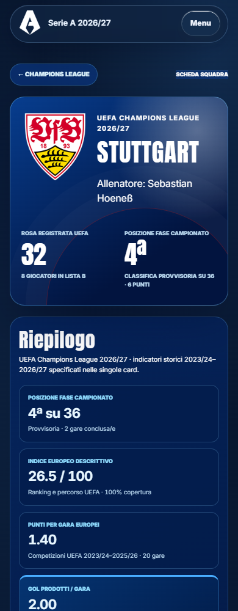

<style>body{margin:12px;background:#d7e0e8;font:15px system-ui}main{display:grid;grid-template-columns:repeat(4,1fr);gap:12px}figure{margin:0;min-width:0}figcaption{height:40px;font-weight:600}img{width:100%;height:auto;display:block}</style><main><figure><figcaption>64 · champions-league.html?team=sabah</figcaption></figure><figure><figcaption>65 · champions-league.html?team=shakhtar-donetsk</figcaption></figure><figure><figcaption>66 · champions-league.html?team=slavia-praha</figcaption></figure><figure><figcaption>67 · champions-league.html?team=slovan-bratislava</figcaption></figure><figure><figcaption>68 · champions-league.html?team=sporting-cp</figcaption></figure><figure><figcaption>69 · champions-league.html?team=stuttgart</figcaption></figure><figure><figcaption>70 · champions-league.html?team=viking</figcaption></figure><figure><figcaption>71 · champions-league.html?team=villarreal</figcaption></figure></main>